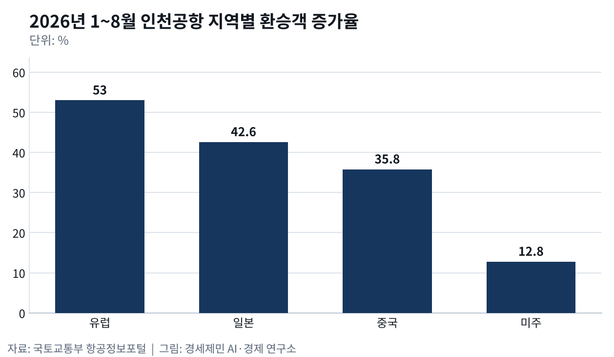
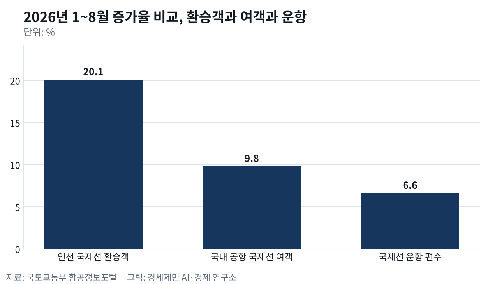
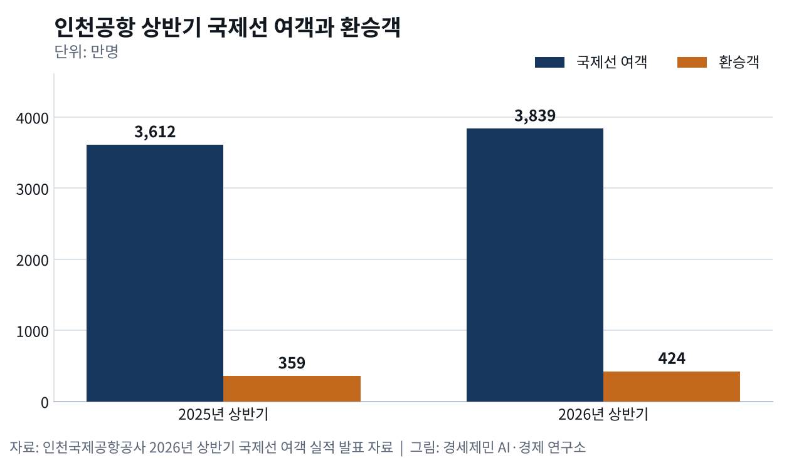

허브는 밀도로 이긴다, 인천 환승 598만명
- 1~8월 환승객 598만명, 1년 전보다 20.1% 늘어
- 유럽 환승 53.0% 증가, 미주 환승 202만명 최다
- 2025년 환승률 10.9%, 동시 이착륙은 2대
국토교통부 항공정보포털 집계를 보면 올해 1~8월 인천국제공항(ICN)을 거친 국제선 환승 여객은 598만2000명이다. 지난해 같은 기간 498만명보다 20.1% 늘었다. 국내 공항 국제선 여객 증가율 9.8%의 두 배를 넘고 국제선 운항 편수 증가율 6.6%의 세 배다. 이 기간 국제선 여객은 6843만5000명, 운항 편수는 38만4700편이었다.

지역별로는 유럽 환승객이 53.0% 늘어 증가 폭이 가장 컸다. 일본은 42.6%, 중국은 35.8%, 미주는 12.8% 늘었다. 규모로는 미주 환승객이 202만명으로 가장 많았다. 중동 정세 변화로 중동을 거치던 수요 일부가 인천으로 옮겨 왔다는 분석이 나왔다. 미중 직항 회복이 더딘 사이 중국에서 인천을 거쳐 미주로 가는 수요가 늘었다는 분석도 나왔다.
한 노선에 사람이 몰리면 좌석 원가가 내려간다
항공사 원가를 가르는 것은 회사 덩치보다 노선 밀도다. 1984년 미국 항공사 패널 자료로 비용 함수를 추정한 연구는 대형 항공사와 소형 항공사 원가 차이를 규모로 설명할 수 없다고 밝혔다. 원가 차이를 가른 첫째 요인은 네트워크 안 교통 밀도였고 평균 비행거리가 그다음이었다. 승객이 한 노선에 몰릴수록 좌석당 원가가 내려간다는 결과다.

허브앤스포크(hub-and-spoke, 바퀴살 연결망)가 여기서 나온다. 여러 도시 승객을 허브 한 곳에 모아 갈아태우면 노선마다 탑승객이 늘어난다. 1994년 미국 연구는 허브를 거치는 시장을 분석해 노선 구간 밀도 경제가 강하다고 확인했다. 규제 완화 뒤 공항 집중이 커진 까닭도 이 비용 구조로 설명했다. 하늘길이 허브 몇 곳으로 모이는 까닭이 여기에 있다.
환승은 연결편 수와 시간표로 겨룬다
승객을 모으려면 갈아탈 비행기가 제시간에 있어야 한다. 국내 연구진은 2009년 유럽과 미주와 아시아 주요 공항 연결성을 재는 연속 연결성지수를 만들었다. 연구진은 규제 완화가 유럽과 미국 항공망을 허브앤스포크로 바꿨고 아시아 자유화도 같은 변화를 부른다고 봤다. 도착편과 출발편 사이 시간, 경유 거리, 환승 노선 운항 빈도를 함께 쟀다. 이 지수는 공항별 환승객 수 차이의 94%를 설명했다.
같은 연구에서 지수 로그값은 환승률 차이의 69%를 설명했다. 연구진은 기존 지수들보다 설명력이 높다고 밝혔다. 항공사와 공항 당국이 연결성 지수를 세워 운영하는 것이 중요한 과제라고 짚었다. 시간 연결성은 도착편과 출발편이 갈아타기 좋은 간격으로 맞물렸는지를 잰다. 허브 항공사가 특정 시간대에 비행기를 몰아 띄우고 내리는 까닭이다.
인천 환승률 10.9%, 2025년에는 줄었다
2025년 인천 환승객은 804만6572명으로 전년보다 2.3% 줄었다. 국제선 여객 7355만4772명으로 나누면 환승률은 10.9%다. 2019년 환승객의 95.9% 수준이다. 중국과 동남아에서 미주와 유럽으로 가는 직항이 늘었다. 서울신문은 러시아 영공을 지나는 중국 항공사들이 환승 수요를 흡수한 영향으로 풀이했다.
밀도의 경제는 거꾸로도 작동해 경쟁 허브가 직항과 연결편을 늘리면 인천에서 갈아탈 승객이 빠진다. 2025년 환승객이 줄어든 것이 그 사례다. 올해 상반기에는 흐름이 뒤집혀 환승객이 424만명으로 1년 전 359만명보다 18.1% 늘었다. 같은 기간 국제선 여객은 3612만명에서 3839만명으로 6.3% 늘어 환승 증가율이 그 세 배에 가깝다.
인천국제공항공사는 미국과 이란 전쟁으로 두바이와 히스로 여객 증가세가 주춤한 사이 인천이 수요를 흡수했다고 분석했다. 외국인 방한객 증가도 실적을 끌어올렸다고 밝혔다. 상반기 국제선 여객 3839만명으로 국제공항협의회(ACI) 잠정 통계 세계 1위에 오른 배경이다. 대한항공은 2분기 여객사업 매출이 1년 전보다 4514억원 늘어난 2조8479억원이라며 중동 지역 환승 수요를 요인으로 들었다.
밀도를 받칠 그릇, 동시 이착륙은 2대
환승객을 모으려면 같은 시간대에 비행기를 몰아 띄우고 내릴 활주로가 있어야 한다. 경인일보 보도를 보면 홍콩과 상하이 푸둥은 항공기 세 대가 동시에 뜨고 내리는 3독립 활주로를 쓰지만 인천은 두 대까지다. 공사는 2033년 여객이 1억1100만명으로 지금 수용 능력보다 4%가량 많아진다고 내다본다. 5단계 공사 기간은 8~10년으로 잡았다.
제3여객터미널과 제5활주로를 짓는 5단계는 사업비 약 6조원 규모이고 제3여객터미널은 연간 약 2000만명을 받는다. 제7차 공항개발종합계획에 들어가야 예비타당성조사를 신청할 수 있다. 인천시는 2025년 4월 5단계 반영을 요구하는 의견서를 냈다. 정부는 그 계획을 올해 하반기에 내놓는다. 환승객이 20% 넘게 늘어난 해에 인천공항 다음 그릇이 정해진다.
※ 이 기사는 AI 프로그램 클로드를 활용해 작성했습니다.


이 기사는 인공지능을 활용해 작성했습니다. 사실관계는 저자가 확인했습니다.
참고문헌
기관 자료
- 인천국제공항공사, 2025년 항공운송실적 발표 자료, 2026년 1월 25일.
- 인천국제공항공사, 2026년 상반기 국제선 여객 실적 발표 자료, 2026년 8월 13일.
- 국토교통부, 항공정보포털시스템 2026년 1~8월 국제선 여객·환승 통계, 2026년 9월 26일. https://www.airportal.go.kr
연구 논문
- Caves, D. W., Christensen, L. R., & Tretheway, M. W., "Economies of Density versus Economies of Scale: Why Trunk and Local Service Airline Costs Differ", 『The RAND Journal of Economics』 15(4), 1984년, pp.471-489. https://doi.org/10.2307/2555519
- Brueckner, J. K., & Spiller, P. T., "Economies of Traffic Density in the Deregulated Airline Industry", 『The Journal of Law and Economics』 37(2), 1994년 10월, pp.379-415. https://doi.org/10.1086/467318
- 이상용, 유광의, 박용화, "공항의 허브화 평가를 위한 연속연결성지수모형 개발", 『대한교통학회지』 27(4), 대한교통학회, 2009년, 195~206쪽. https://www.kci.go.kr/kciportal/ci/sereArticleSearch/ciSereArtiView.kci?sereArticleSearchBean.artiId=ART001369528
언론기사
- 한상봉, "인천공항 '개항 이후 최대 항공운송 실적'", 서울신문, 2026년 1월 25일. https://www.seoul.co.kr/news/economy/2026/01/25/20260125500029
- 이종선, "제7차 공항개발계획 발표 임박···인천공항 5단계 건설 불발 우려 팽배", 인천투데이, 2026년 5월 27일. https://www.incheontoday.com/news/articleView.html?idxno=319326
- 김주엽, "이미 확장중인 동북아 경쟁국… 인천공항 생존 '5단계' 달렸다", 경인일보, 2026년 7월 7일. https://www.kyeongin.com/article/1766923
- 강준완, "인천공항 새 역사…국제선 여객 '세계 1위'", 한국경제, 2026년 8월 13일. https://www.hankyung.com/article/2026081301661
- 박소희, "고유가에도 국제선 여객 10% 늘었다…일본·중국 노선 20%대 급증", 이비엔(EBN), 2026년 9월 26일. https://www.ebn.co.kr/news/articleView.html?idxno=1725682